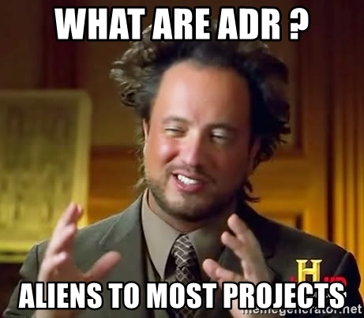
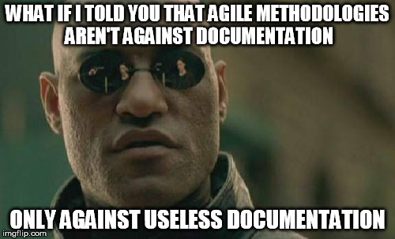
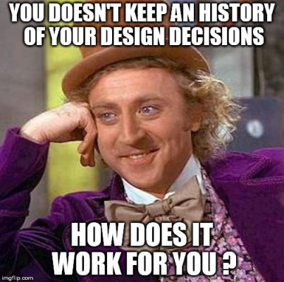
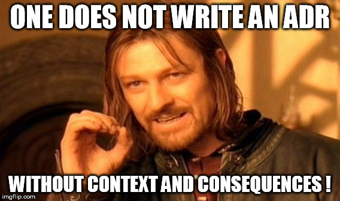
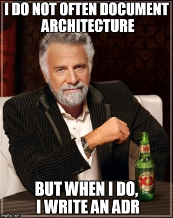

Suivre les décisions d'architecture avec les ADR
Contenu
The Big Picture
Les ADR (Architectural Decision Record) sont une documentation des décisions d’architecture que Michael Nygard a formalisée en 2011 dans un billet sur le blog de Relevance (devenu Cognitech depuis). Pour les lecteurs moins à l’aise avec la langue anglaise, je propose une traduction du billet en français sur un petit dépôt sur GitHub avec d’autres ressources sur les ADR en complément de cet article.
Cette documentation légère est adaptée à des projets agiles. Souvent écrite en Markdown, AsciiDoc, Textile ou un format de ce type, elle est alors suivie en gestion de configuration avec le code source. Cependant, elle peut également être gérée via le wiki du projet ou exister à travers des documents textes classiques voire des slides.
L’objet d’un ADR est de garder un historique des décisions d’architecture afin que les choix de conception restent compréhensibles même pour de nouveaux arrivants. Un ADR capture le contexte et les conséquences de la décision au moment où cette dernière est prise. Cela permet ainsi d’avoir de la perspective sur les décisions passées et d’avoir des éléments pour prendre des décisions éclairées pour les besoins présents du projet en tenant compte de ces choix passés.
Jolie petite histoire
Jon Snow est un jeune développeur fraîchement sorti de formation à Winterfell. Il vient d’arriver dans sa nouvelle entreprise, NightWatch. Il est pressé d’en découdre et de faire ses preuves. Lors des premiers développements qu’il réalise, il s’aperçoit qu’il y a du code dupliqué dans plusieurs modules différents. Ces différents modules correspondent à des fonctionnalités métiers différentes mais possédent des abstractions fonctionnelles (des classes représentant des concepts métiers) et techniques (ici des classes qui permettent de les sérialiser en/désérialiser de JSON) dupliquées.
Profitant du travail sur une feature qui touche à ces classes dans un des modules, Jon en profite pour se lancer dans un refactoring aggressif après avoir vérifié - et le cas échéant complété - la couverture de tests pour ces parties de code-là. Ainsi, il sort sous forme d’un module séparé les abstractions métiers d’une part et les classes pour la sérialisation/déserialisation d’autre part, puis fait en sorte que les différents modules s’appuient désormais sur ces 2 nouveaux modules, supprimant les duplications de code. Il est plutôt content de lui, il a appliqué DRY (Don’t Repeat Youtself) et ce qu’il a fait fonctionne bien. Dommage qu’il n’y ait pas de revues de code mise en place dans l’équipe, il était fier de lui sur ce coup-là et en aurait volontier discuté avec ses collègues.
Quelques temps après Grenn, un autre jeune développeur arrivé également depuis peu chez NightWatch, doit développer une nouvelle fonctionnalité sur un module métier différent de celui de Jon. Cependant, entre temps le code de Jon a été mergé sur la branche principale du dépôt de code, et il part d’une base de code avec les modifications et les nouveaux modules introduits par Jon.
Il se trouve que les différents modules métiers exposent différentes API REST en JSON. Et la nouvelle fonctionnalité que Grenn a à mettre en oeuvre implique des changements sur les données en JSON exposées. Il doit ainsi modifier les classes de sérialisation/désérialisation maintenant communes. Mais là, c’est le drame, il y a des régressions dans tous les sens !!!
L’architecte, Alliser Thorne, fait une rapide enquête, et s’aperçoit que quelqu’un a factorisé les classes de sérialisation/désérialisation dans un module commun :
Ah c’est ce jeune imbécile de Jon Snow ! Encore un de ces jeunots qui sort de l’école et se croit permis de tout changer dans le code !!! De toutes façons, ce gars, je ne l’aime pas ! Qu’est-ce qu’il croyait le faraud, il y avait une raison à cette duplication de code ! J’avais anticipé que les modules métiers auraient à évoluer indépendamment !
Lors d’une réunion, il tombe sur Jon. Allister est un architecte acariâtre et présent depuis longtemps chez NightWatch, bref une institution : personne ne vient le contredire et tout le monde regarde ses pieds, pendant que Jon se prend une soufflante.
Heureusement pour ce dernier Tyrion Lannister, un consultant indépendant mais influant auprès du directeur de projet, Jeor Mormont, vient à sa rescousse. Et il n’a pas sa langue dans sa poche !
Mon cher Alliser, je vous trouve bien dur envers ce jeune développeur, surtout que ce n’est pas lui qui est en faute mais bien vous, le garant de l’architecture et des bonnes pratiques ! Je ne reviendrai pas ici sur le fait que si vous aviez mis en place des revues de code, vous auriez vu le problème plutôt, mais comment un développeur pouvait-il savoir qu’il y avait une raison à ce que ce code dupliqué ne soit pas à factoriser ? Etait-ce documenté quelque part ? La décision et les raisons de cette décision étaient-elles connues ? Son idée n’a rien de mauvaise, même s’il aurait dû communiquer sur ce sujet avec ces collègues… mais bon, on n’est pas trop incité à la communication dans vos équipes !
Alliser est rouge comme une pivoine et est sur le point d’éclater ! Hargneusement, plein de morgue, il balance à Tyrion :
C’est facile pour vous M. Lannister de venir nous donner des leçons ! Mais depuis que nous sommes passés à “l’Agile", nous n’avons plus de documents de conception ! Et de toutes façons, les jeunes sots que l’on recrute savent à peine lire et ne compulsent pas les docs ! Et puis tous les développeurs le savaient ! Quand j’ai pris cette décision, il y a un an, je l’ai bien fait savoir à tout le monde !
Tyrion ne se démonte pas et rétorque avec un grand sourire :
Peut-être que des développeurs il y a 1 an “le savaient", mais il faut avouer qu’avec un tech lead tel que vous le turn-over est important dans vos équipes. Je doute qu’il reste beaucoup de développeurs qui “le savaient” : je ne peux que constater que les bons éléments ne restent pas longtemps avec vous, hélas. Et puis “l’Agilité” n’est pas une excuse pour ne pas documenter vos décisions d’architecture afin qu’on ne se retrouve pas dans des situations comme celle-ci ! Les ADR vous connaissez ?
Peu après, Alliser fut sorti en douceur du projet et placé sur une avant-vente. Jon décida de tempérer sa fougue de codeur. Il se dit qu’il allait commencer par suivre la recommandation de Tyrion et regarder de plus près ces fameux ADR et de manière générale, s’assurer de mettre en place les outils idoines pour améliorer la communication avec ces collègues.
Les ADR en questions

Est-ce que les ADR documentent la conception ?
Les ADR documentent les décisions de conception ou d’architecture pas la conception elle-même. Ainsi, s’ils peuvent référencer un ou des documents de conception, ce qu’ils documentent c’est la décision qui concerne le choix de conception ou d’architecture correspondant.
Un ADR décrit une décision structurante ou significative pour un projet spécifique : cela devrait être quelque chose qui a un effet sur la manière dont la suite du projet va se dérouler.
Mais de la documentation pour des projets agiles, n'est-ce pas contradictoire ?

Les ADR sont une forme de documentation légère et efficace particulièrement adaptée au projet Agile. Les ADR s’ils sont correctement mis en place, sont une forme de documentation utile qui a sa place dans tout type de projets dans lequel la traçabilité des choix de conception peut être importante.
Pourquoi utilise-t-on des ADR ?
On utilise les ADR pour garder un historique des décisions d’architectures significatives, c’est-à-dire celles qui affectent la structure, les caractéristiques non-fonctionnelles, les dépendances, les interfaces ou les constructions techniques.
Mais en quoi est-ce nécessaire d'avoir un historique des décisions d'architecture ?
La première vertu des ADR est d’être un outil qui permet une traçabilité des décisions : à tout moment, quelque soit notre historique sur le projet, on peut comprendre pourquoi telle ou telle décision a été prise et s’il faut les revoir avec les évolutions du contexte.
Cela permet ainsi de comprendre pourquoi la situation est ce qu’elle est aujourd’hui et d’avoir plus d’assurance pour faire des choix d’architecture qui peuvent remettre en cause les choix précédents. Plus de décision aveugle sur le fait de tout casser ou de tout garder en l’état, on peut prendre des décisions éclairées !

C’est également un outil fort utile dans un contexte de rotation des équipes, en permettant d’avoir une mémoire des choix effectués, indépendante des membres de l’équipe qui au final vont et viennent. C’est aussi pour cela qu’il est important que les ADR soient avec le code source, là où une bonne partie des décisions se matérialisent.
Un effet de bord intéressant, c’est qu’en rendant explicite les décisions, leur contexte et leurs conséquences, cela amène à avoir une réflexion en amont sur le bien fondé de la décision et d’être pleinement conscient des conséquences positives comme négatives de cette décision.
De plus, en ancrant cette décision dans un contexte précis, il est plus facile de revoir l’ensemble des décisions à la lumière d’un changement de contexte, pour les déprécier et en prendre de nouvelles si nécessaire.
Enfin, les ADR constituent un support fort utile pour alimenter des revues d’architecture, pour préparer retrospectives et REX d’un projet ou rédiger le postmortem d’un problème.
Quelles sont les parties constitutives d'un ADR ?
Un ADR est en général constitué a minima des 5 parties suivantes :
- Titre :
ADR 10 : Ecriture d’une brique batch séparée en C# pour convertir les documents Office - Contexte dans lequel la décision d’architecture décrite dans ce document est prise
- Décision prise dans le cadre de l’ADR résumé en 1 ou 2 phrases.
- Etat : Proposée/Refusée/Acceptée/Dépréciée
- Conséquence(s) pour l’application, les développements, l’implémentation, etc. de cette décision
- Les conséquences et impacts tant positifs, négatifs que neutres.
Comment rédige-t-on un ADR ?
C’est un court fichier texte dans un format similaire à celui des modèles de conception de Christopher Alexander.
Chaque enregistrement décrit un ensemble de forces et de contraintes et une unique décision en réponse à ces forces et ces contraintes : la décision est le point central. Ainsi des forces et des contraintes spécifiques peuvent apparaître dans de multiples ADR : il est important, à l’image du principe SRP (Single Responsability Principle) en conception objet, qu’un ADR donné ne traite que d’une unique décision.
Les conséquences d’un ADR peuvent également constituer le contexte d’ADR ultérieurs : les conséquences suffisamment significatives vont entrainer de nouvelles décisions structurantes, qui seront l’objet d’un ADR.
Il est important que le contexte et les conséquences d’un ADR soient factuelles : ils ne doivent servir ni à régler ses comptes, ni à faire de la politique, ni à montrer que l’on n’est pas d’accord, ni à valoriser ou dévaloriser quelqu’un, etc. On vise au factuel et à l’objectivité, il faut avoir les éléments pour comprendre la décision et comprendre ses impacts. Une décision n’est ni bonne ni mauvaise, elle a un sens dans un certain contexte et un ensemble d’impacts qu’il est nécessaire de prendre en compte.
Quels sont les points importants à ne pas oublier ?
Le contexte et les conséquences sont essentiels à un ADR qui perd grandement de sa valeur et de son utilité sans eux.

Mais au fait qui prend la décision ?
C’est à vous de voir : dans l’esprit c’est pour matérialiser les décisions de l’équipe mais cela peut très bien être une décision de l’architecte ou du tech lead.
Les ADR s’adaptent à votre organisation car ils ne sont pas prescriptifs sur le qui prend la décision : l’ADR peut être rédigé par une personne, deux personnes ou par l’équipe entière. Et de même, la décision d’adopter, de refuser ou de déprécier un ADR peut être le fait d’une personne ou de l’équipe dans son ensemble.
Vous pouvez définir pour vos ADR un statut Refusé et les historiser également mais ce n’est pas une obligation.
Et si finalement la décision doit être changée ?
Un ADR a un statut qui sert exactement à cette fin. Si la décision n’est plus valable car le contexte a changé ou que les conséquences de cette décision ne sont plus souhaitables ou gérables dans le nouveau contexte, l’ADR en question sera dépréciée et un nouvel ADR documentant la nouvelle décision et son contexte pourra être écrit.
C'est uniquement pour les décisions d'architecture ?
La traçabilité des décisions importantes n’est pas pertinente uniquement pour les choix techniques. On pourrait imaginer d’avoir une historisation de décisions métiers ou de décisions organisationnelles par exemple.
Un point important à conserver en tête, néanmoins, est que les ADR sont nés dans un cadre agile dans lequel on souhaite produire de la documentation utile. Le point-clé ici est que ce sont les décisions importantes qui sont documentées : il faut être au bon niveau de granularité et être d’accord au sein de l’équipe sur ce qui est important et doit être tracé. Intuitivement ce sont les décisions structurantes, c’est-à-dire les décisions qui sont plus difficiles et/ou plus coûteuses à modifier une fois prise.
Et je peux faire ma propre variante des ADR ?
Evidemment ! Les ADR sont un outil qui se prête bien à une personnalisation : il faut être pragmatique et savoir adapter les outils que vous croisez pour qu’ils répondent au mieux au besoin de votre équipe. D’ailleurs il existe déjà plusieurs variantes, dont quelques-unes sont listées ci-après.
Par contre, par pitié, n’appelez plus cela un ADR si vous supprimez la partie Contexte et/ou la partie Conséquences !
En parlant de conséquences, quelles sont-elles pour un ADR ?
La mise en place des ADR n’est pas très coûteuse en elle-même et ne représente pas un gros risque pour une équipe qui voudrait les essayer.
Néanmoins, il faut que l’équipe fasse preuve de discipline et de constance dans la rédaction des ADR : la pratique a un meilleur ROI sur le long terme et si elle est effectuée de manière consistante.
De plus, il faut bien calibrer l’utilisation des ADR, afin de les écrire pour les choix de conception au bon niveau d’abstraction, sinon il y aura trop d’ADR pour des décisions mineures ou pas assez sur des choix de conception trop génériques.
Et tu aurais un exemple d’ADR sous la main pour rendre les choses plus concrètes ?
Oui bien sûr, j’ai mis un exemple d’ADR dans un dépôt sur GitHub.
Et tu aurais un exemple de mise en place d'ADR ?
Comme écrit un peu plus haut, les ADR ne sont pas prescriptifs d’une démarche spécifique. Néanmoins, il est légitime de s’interroger sur leur mise en place dans le cadre d’un projet. Il faut distinguer le cas d’un nouveau projet et d’un projet existant.
Nouveau projet
C’est le cas le plus simple :-) ! Il suffit de commencer à rédiger les ADR, pour toutes décisions structurantes. Une des difficultés est bien sûr de ce qu’on entend par structurante : il ne faut pas que l’équipe tombe dans le piège de ne pas être au bon niveau de granularité.
L’autre écueil à éviter est de ne pas être discipliné pour écrire les ADR et de n’en rédiger que quand on a le temps ou on y pense. Les ADR en soit ce n’est pas compliqué mais cela demande de la rigueur, de la constance et de la discipline à l’équipe pour que la pratique soit fructueuse.
Le fait de mettre en oeuvre des ADR peut d’ailleurs être le premier ou un des premiers ADR !
Projet existant
Si c’est un projet que vous reprenez et qui utilise déjà des ADR, c’est relativement simple, il suffit de continuer à faire les ADR :-) !
Cependant soyons réalistes, si cela peut arriver (comme il arrive que vous récupériez ou arriviez sur un projet qui suit une démarche TDD et qui possède un patrimoine de tests unitaires et de tests d’intégration), vous avez plus de chances d’arriver sur un projet sans ADR que sur un projet avec.
Comme pour un projet sans tests unitaires automatisés, ce n’est pas une raison pour ne pas commencer à les mettre en place mais il va y avoir un vrai challenge ! La difficulté est que vous n’avez justement pas l’historique des décisions !
Le premier ADR pourrait être la aussi la mise en place des ADR, avec un contexte spécifique qui est celui d’une application legacy dans laquelle de nombreuses décisions n’ont pas été tracées. Si vous avez de la chance vous pouvez trouver dans d’autres documents de conception du projet des éléments donnant des indications sur les raisons des choix. Dans tous les cas, cela représente bien une partie du contexte dans lequel vous allez prendre vos décisions d’architecture actuelles.
De plus, si vous n’avez pas le contexte des décisions et leurs impacts, vous avez le produit de ces décisions sous les yeux : si l’application est une application Web monolithique en Java/Spring, c’est bien le produit de décisions prises à un moment ou un autre lors de la vie du projet. Vous ne savez pas pourquoi ces choix ont été faits, mais c’est bien une partie du contexte dans lequel vous avez à prendre vos décisions d’architecture maintenant et dans lequel elles auront des impacts divers.
Il est probable que dans un tel cas, la mise en place des ADR suscitera plus de frictions et un coût de mise en oeuvre initiale plus important. Le plus gros risque, est qu’il y ait un abandon de la pratique avant même qu’elle puisse démontrer son intérêt.
Et si je souhaite creuser le sujet ?
Bien sûr, l’idéal est de prendre le temps de lire le billet original de Michael Nygard sur les ADR : Documenting Architecture Decisions. Si vous êtes allergiques à l’anglais, j’en propose une traduction en français.
L’article Sustainable Architectural Design Decisions donne une vision complémentaire aux ADR. Cet article s’intéresse surtout à la question de la durabilité des décisions d’architectures et des moyens qui peuvent être mis en oeuvre pour faire des décisions de conception durables. S’il ne préconise pas en particulier les ADR, il rejoint cette approche en prônant une documentation légère et simple. Il va cependant plus loin en mettant l’accent sur la traçabilité, en définissant des critères de durabilité des décisions et en proposant des lignes directrices pour atteindre cette durabilité des décisions d’architecture. On peut juste noter au passage que les ADR peuvent constituer les premières étapes pour la mise en place d’une démarche de ce type.
Les ADR sous la forme de Lightweight Architecture Decision Records sont mentionnés dans la partie Techniques du Technology Radar de ThoughWork dès Novembre 2016 (en Trial) jusqu’en mai 2018 (en Adopt).
Il est possible de trouver plusieurs modèles pour les ADR. Par exemple, on peut citer :
- Les templates en Markdown que Joel Parker Henderson propose sur sa Page GitHub sur les ADR.
- le format MADR, Markdown Architectural Decision Records.
- ou encore le format E-ADR (Embedded Architectural Decision Records).
Je vous propose également des templates aux formats Markdown et AsciiDoc sur le dépôt GitHub précédemment cité.
En conclusion
Les ADR sont faciles et peu coûteux à mettre en place. Au prix d’une discipline et d’une constance rédactionnelle, ils fournissent un support très appréciable pour garder un historique et une traçabilité des décisions d’architecture prises. Ainsi ils permettent de ne pas perdre de vue les choix effectués, le contexte de ces choix et leurs conséquences, ce qui permet de prendre de nouvelles décisions plus éclairées.

Informations légales
 . Ce travail est sous licence Creative Commons Attribution-ShareAlike 4.0 International License
. Ce travail est sous licence Creative Commons Attribution-ShareAlike 4.0 International License
Auteur TGITS
Modifié 2021-11-04